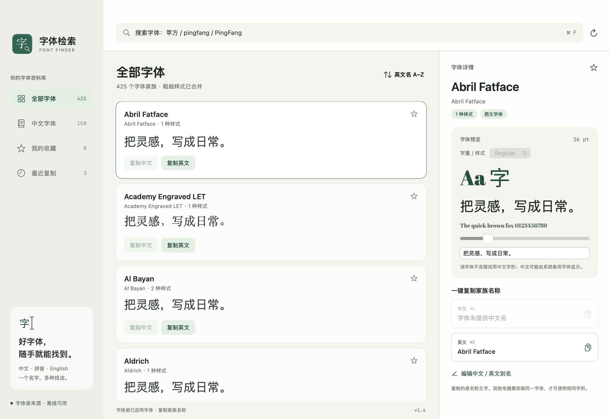

一个名字，多种找法。
中文、拼音、拼音首字母、英文，甚至 PostScript 名称。输入你记得的部分，就能搜索本机字体。
苹方pingfangpfPingFang
记得字的样子，却想不起它的名字？
中文、拼音或英文，换个方式也能找到。
让找字体这件小事，变得简单一点。
v1.4 · macOS 13+ · Apple 芯片 / Intel 通用

专注本机字体查找与名称复制，
把熟悉的工作流程，变得更顺手。
中文、拼音、拼音首字母、英文，甚至 PostScript 名称。输入你记得的部分，就能搜索本机字体。
同一家族的字重合并展示。切换 Regular、Light、Bold 等样式，输入自己的文字，调整字号预览。
一键复制中文或英文家族名称。收藏喜欢的字体，查看最近复制，也可以添加自己的中英文别名。
字体来自你的 Mac，记录也留在你的 Mac。离线运行；收藏、别名与最近复制保存在本机。安装包不包含字体文件。
读取本机已启用、持久注册且有实际文件的字体，过滤隐藏、未下载和应用临时加载的字体。
同一家族的不同字重与样式合并，在右侧切换预览。简繁体和不同宽度家族仍独立显示。
旧版按字重记录的收藏、最近复制与别名，迁移到字体家族条目。
选择适合你的下载文件。
解压后即可安装，无需额外运行环境。
Swift 原生实现，使用 macOS 系统框架。
当前安装包使用本地 ad-hoc 签名，尚未完成 Developer ID 签名及 Apple 公证。首次打开可能需要在系统设置中确认。
下载 SHA-256 校验文件下载 macOS 通用版 ZIP，双击压缩包，找到「字体检索.app」。
将「字体检索.app」拖入 Applications（应用程序）文件夹。
启动应用，输入中文、拼音或英文，预览字体并复制名称。
bash build.sh。脚本构建 arm64 和 x86_64 分支，合并为通用应用并进行本地签名。